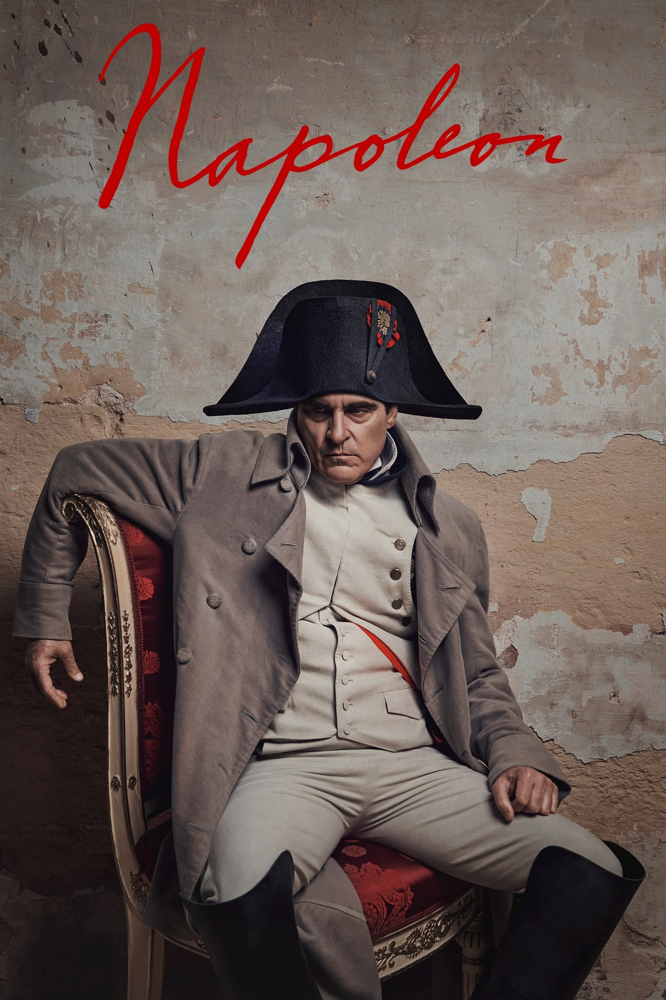

Birthdate: October 28, 1974
Nationality: American
Awards: Academy Award (Joker), Cannes Best Actor
Known For: Joker, Her, Walk the Line
Note: Brought psychological complexity to Napoleon; insisted on portraying insecurity alongside ambition
Birthdate: April 18, 1988
Nationality: British
Awards: Venice Best Actress (Pieces of a Woman), Academy Award nomination
Known For: The Crown, Pieces of a Woman, Mission: Impossible series
Note: Her Josephine drives the film's emotional engine; the relationship is far more central than in most Napoleon portraits
Birthdate: September 22, 1966
Nationality: British
Known For: The Crown, Coupling
Note: Appears as Napoleon's faithful advisor in several key political scenes
Birthdate: July 3, 1979
Nationality: French
Awards: Cesar Award nomination
Known For: Swimming Pool, 8 Women, A Secret
Note: Napoleon's famously unconventional sister; her presence adds domestic texture to the imperial world
Nationality: French
Known For: Various French productions
Note: The Russian campaign scenes required an actor who could hold the screen against Phoenix